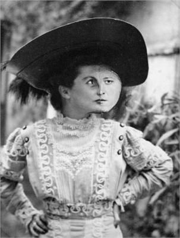

1925
Joan Miró
“I try to apply colours like words that shape poems, like notes that shape music.”
― Joan Miró

Date: 1925
Style: Surrealism, Automatic Painting
Genre: Abstract
Medium: Oil on canvas
Location: Georges Pompidou Center, Paris, France
Dimensions: 113 x 144 cm
Joan Miró was a Spanish painter, sculptor, and ceramicist, renowned for his imaginative and colorful work that bridged Surrealism, abstraction, and the unconscious mind. Born in 1893 in Barcelona, he was deeply influenced by Catalan folk art and the vibrant culture of his native region, as well as by the surrealist movement and its exploration of dreams and irrationality. Miró's work often incorporated elements of the subconscious, with symbols, biomorphic forms, and playful abstraction reflecting his fascination with the inner workings of the mind. He was inspired by nature, particularly the landscapes of his childhood, as well as by the works of artists like Paul Klee and Henri Matisse. Throughout his career, Miró sought to liberate art from conventional constraints, using bold colors, simple shapes, and spontaneous techniques to create a unique, highly personal visual language.
1930
Salvador Dalí
"I don't do drugs. I am drugs."
— Salvador Dalí

Date: 1929
Style: Surrealism
Genre: Symbolic Painting
Medium: Oil on canvas
Location: Museo Nacional Centro de Arte Reina Sofía (MNCARS), Madrid, Spain
Dimensions: 110 x 150 cm
Salvador Dalí was a Spanish painter and leading figure in the Surrealist movement, known for his eccentric style and dreamlike imagery. Born in 1904, he was deeply influenced by the Freudian ideas of the unconscious mind, which shaped his exploration of dreams, desires, and irrationality in his art. Dalí's most iconic works, such as The Persistence of Memory, reflect his fascination with time, decay, and the fluidity of reality. His inspiration also came from the classical masters, as well as from his love of scientific discoveries, psychoanalysis, and his personal obsessions. Throughout his career, Dalí sought to challenge conventional perceptions of reality, blending meticulous technique with bizarre, often unsettling imagery that pushed the boundaries of visual art.
1935
Remedios Varo

"I do not believe that in its essence it (Surrealism) can decline since it is a sentiment inherent to man...Surrealism has contributed to art in the same way that psychoanalysis has contributed to the exploration of the subconscious."
— Remedios Varo
Original Title: El Mensaje
Date: 1935
Type: Painting
Genre: Symbolic Painting
Medium: Oil on masonite panel
Location: Private Collection
Dimensions: 26.5 x 16.5 cm
One of the earliest involved in the Surrealist movement, Remedios Varo broke
barriers in the production of surrealist artwork that centered on women.
Many of her artworks featured self-portraits and images documenting her travels
and interactions with her peers.
Varo was also one of the first Surrealists to work in North America,
with most of her career occurring during her time living in Mexico.
Like other Surrealists, Varo’s work explored metaphysical and philosophical
themes including scientific theories like Darwinism. While Andre Breton originally
excluded women from the movement, Varo was also one of the first to be recognized
by Breton to have contributed to the development of Surrealistic artwork.
1940
Leonora Carrington
“You may not believe in magic but something very strange is happening at this very moment. Your head has dissolved into thin air and I can see the rhododendrons through your stomach. It's not that you are dead or anything dramatic like that, it is simply that you are fading away and I can't even remember your name.”
― Leonora Carrington, The Hearing Trumpet
Date: 1942
Type: Painting
Genre: Symbolic Painting
Location: MoMA, The Museum of Modern Art (not on view)
Dimensions: 61 x 76.2 cm
Carrington follows the path paved by Remedios Varo as one of the first women to
contribute to the Surrealist movement, and also as one of the many surrealists working in Mexico.
Having passed in 2011, Carrington was also one of the last living members of the
surrealist movement. Her work and passion for surrealism was inspired by reading books
and poetry on surrealism, including Herbert Read’s Surrealism.
Along with producing her own art, Carrington also collaborated often with Max Ernst,
with whom she also had a romantic relationship.
1945
Max Ernst
“Creativity is that marvelous capacity to grasp mutually distinct realities and draw a spark from their juxtaposition.”
― Max Ernst

Date: 1945
Type: Painting
Genre: Symbolic painting
Medium: Oil on canvas
Location: Private Collection
Dimensions: 152 x 205 cm
Inspired by artist Giorgio de Chirico and Paul Klee, Max Ernst is regarded as not only a surrealist artist, but also a founding member of the Dadaist movement. He is most famous for creating artistic techniques called frottage and grottage, both of which were rubbings made on objects or paintings. Ernst is also considered a major influence on the later Abstract Expressionism movement, which his son Jimmy was a part of.
1950
Man Ray
"I paint what cannot be photographed, that which comes from the imagination or from dreams, or from an unconscious drive. I photograph the things that I do not wish to paint, the things which already have an existence.”
― Man Ray
Date: 1948
Type: Painting
Genre: Figurative
Medium: Oil on canvas
Location: The Hirshhorn Museum and Sculpture Garden at the Smithsonian Institution in Washington, DC
Dimensions: 86.5 × 76.4 cm
Twelfth Night is part of Man Ray's series of paintings called Shakespearean Equations. The paintings are based on mathematical models that Man Ray first saw in the Institut Henri Poincaré in Paris in the 1930s. Man Ray photographed the models, using dramatic lighting to highlight their shadows, angles, and grooves. The paintings combine artistic practice with mathematical puzzles, human bodies, and Shakespeare's romanticism.
1955
Georges Papazoff
"Art is the expression of the invisible, the capturing of what we cannot see but can only feel."
― Georges Papazoff
Original Title: Deux oiseaux
Date: 1955
Type: Painting
Genre: Figurative
Medium: Oil
Dimensions: 22.5 x 47 cm
Georges Papazoff or George Papazov (in Bulgarian: Жорж Папазов) was a Bulgarian painter and writer. He settled in France and was hailed as "one of the frontrunners of Surrealism". He was friends, among others, with Joan Miró, Max Ernst, Pablo Picasso and Paul Klee. Art historian Andrei Nakov rediscovered him and prepared a one-man exhibition at the Galerie de Seine in 1971, one year before his death. The monograph Georges Papazoff: Franc-tireur du surréalisme was published by Nakov in 1973 in Brussels. A contemporary art gallery in Bulgaria was named after Papazoff.
1960
André Masson
"I wanted to express the violence, the energy, the pulse of life itself. Art should capture the unconscious forces that drive us, which are often hidden from ourselves."
— André Masson
Original Title: Les Filles de cuisine
Date: 1962
Type: Painting
Genre: Abstract
Medium: Oil on canvas
Location: Tate Modern, London, UK
Dimensions: 50.2 x 61 cm
André Masson was a French artist known for his painting, sculpture, illustration, design, and writing. After studying in Brussels and Paris, he served in World War I, where he was severely wounded. In the 1920s, he became involved with the Surrealist movement, experimenting with automatic drawing and exploring themes of violence, metamorphosis, and eroticism. He lived in Spain in the mid-1930s, creating works inspired by bullfights and Spanish myths, before fleeing to the United States during World War II. After the war, Masson returned to France, where he focused on landscapes and abstract art, while also contributing to theater design and writing books, including Mythologie d’André Masson.
1965
René Magritte
"Everything we see hides another thing, we always want to see what is hidden by what we see."
— René Magritte

Original Title: Le fils de l'homme
Date: 1964
Type: Painting
Genre: Self-portrait
Medium: Oil on canvas
Location: Private Collection
Dimensions: 116 x 89 cm
René Magritte was a Belgian Surrealist painter, best known for his thought-provoking and paradoxical imagery. Born in 1898, Magritte’s early experiences, including the death of his mother and the mystery surrounding it, influenced his work's themes of identity, reality, and illusion. His paintings often depicted ordinary objects in unusual contexts, challenging viewers' perceptions of reality, as seen in works like The Son of Man and The Treachery of Images. Magritte was inspired by philosophical ideas, particularly those of existentialism and the nature of perception, drawing on the works of thinkers like René Descartes and Immanuel Kant. Through his use of wit, wordplay, and visual puzzles, he aimed to provoke deeper questioning about the nature of truth and representation.
1970
Eileen Agar
"Surrealism allows you to look at the world as if you had never seen it before, and then to bring something from your unconscious mind to the surface."
— Eileen Agar
Date: 1970
Type: Painting
Genre: Figurative
Medium: Oil on canvas
Location:
Dimensions:
Eileen Agar was a British painter and photographer, known for her association with the Surrealist movement. Born in 1899 in Buenos Aires, she studied art in London and Paris, where she became influenced by the avant-garde and Surrealist circles. Her work often combined figurative elements with abstract forms, incorporating natural materials like shells and feathers to create textured, dreamlike compositions. Agar was inspired by the unconscious mind, the mystery of nature, and her travels, which led her to explore themes of transformation, fantasy, and the erotic. Throughout her career, she remained committed to experimentation, blending painting, collage, and photography to create a distinctive visual language that bridged Surrealism and modernism.